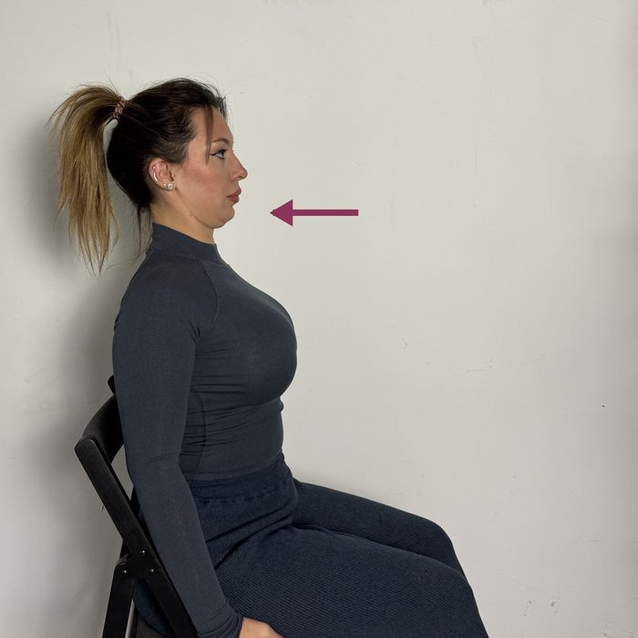
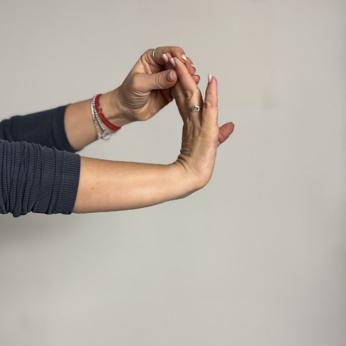
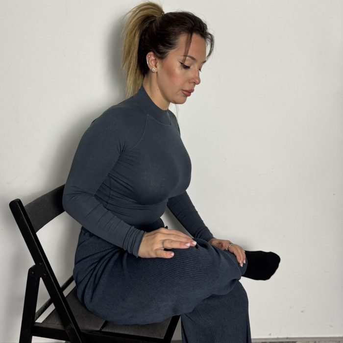

Free routines · no sign-up
Which spot complained most?
Three short routines, three moves each. Move slowly, stay in a comfortable range and stop if anything feels sharp.
Prefer it on one page? Get the free 5-minute desk stretch
Routine 1 · 3 minutes
Neck after 4 hours of gaming

- Chin tucksSit tall. Slide your chin straight back without tilting your head, hold 2 seconds, release.8 slow reps
- Side neck stretchDrop one ear toward your shoulder. Hold the chair seat with the other hand to keep that shoulder down.20–30 s per side
- Shoulder blade squeezePull your shoulder blades back and down, hold 3 seconds, release.10 reps
Routine 2 · 3 minutes
Wrists for mouse and keyboard

- Wrist flexor stretchArm straight in front, palm facing forward, fingers up. Gently pull your fingers back with the other hand.20 s per hand
- Wrist extensor stretchArm straight, palm down. Gently press the back of your hand toward you.20 s per hand
- Tendon glidesOpen hand, hook fist, full fist, flat fist, straight fingers. Move slowly through each shape.5 rounds
Routine 3 · 4 minutes
Hips after a long stream
Needs a bit of floor

- Half-kneeling hip flexor stretchOne knee down on a cushion. Squeeze the glute of the back leg and shift your hips forward a little.30 s per side
- Seated figure-4Ankle on the opposite knee, sit tall, hinge forward slightly from the hips.30 s per side
- Glute bridgeOn your back, knees bent. Push through your heels and lift your hips, pause at the top.10 slow reps
Not medical advice. These are general mobility exercises. If you have pain, an injury or a medical condition, check with a doctor first.
5:00
Want it all on one page?
The free 5-minute desk stretch. All four spots on one printable page: neck, shoulders, wrists and hips, from your chair.

Get the free PDF
Free, instant download. No spam. Download it and you'll also hear first about the updated e-book, the 30-day program at the early price.